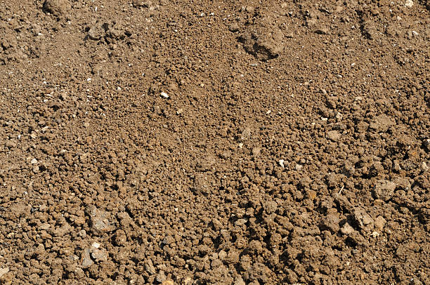

Silty Soil

- Silty soil has a smooth, flour-like texture.
- The pH of silty soil can vary but often falls within the neutral range.
- Silty soil still provides reasonable aeration for plant roots.
- Silty soil retains water better than sandy soil.
- Silty soil is suitable for a wide range of crops, including vegetables and grains.
- It feels soft and holds moisture well.
- It provides a good environment for root growth.
- Addition of organic matter to improve structure and fertility.